Ubuntu 配置指南
Contents
Ubuntu 配置指南#
Note
本节内容适用于 Ubuntu Desktop 22.04 LTS，不一定适用于其他 Ubuntu 版本。 建议用户总是选择 Ubuntu 最新的长期支持版（目前是 Ubuntu 22.04 LTS）或最新版本 （目前是 Ubuntu 23.10），也欢迎用户帮助我们更新本文以适配 Ubuntu 最新版本。
安装系统#
下载系统镜像#
访问 Ubuntu 官网 并下载 Ubuntu Desktop 镜像文件， 一般选择 AMD64（x86_64）版本。
Ubuntu Desktop 22.04 LTS AMD64 的 ISO 镜像文件（约 2.9 GB）下载链接：
制作 USB 启动盘#
Warning
制作 USB 启动盘时会格式化 U 盘！请确保 U 盘中无重要文件！
准备一个 4 GB 以上容量的 U 盘，并使用 Ventoy 制作 USB 启动盘。 Ventoy 可以在 Windows 和 Linux 下使用，详细用法见 官方文档。 下面以图解形式演示如何在 Windows 下使用 Ventoy 制作 USB 启动盘。
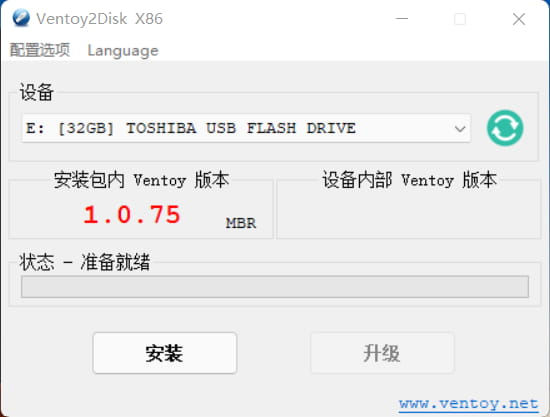
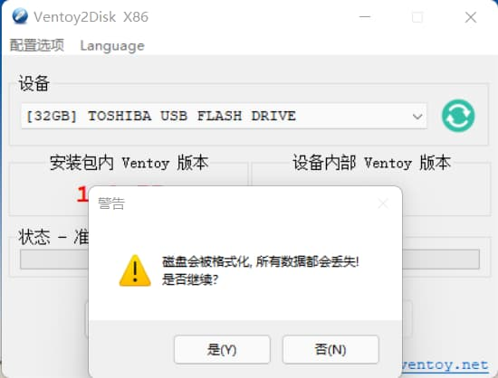
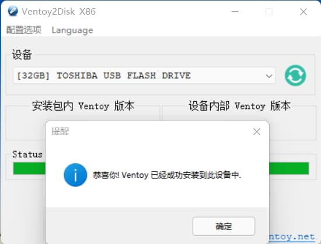
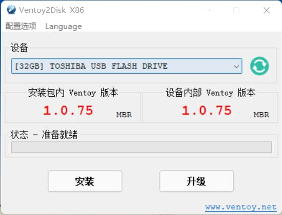
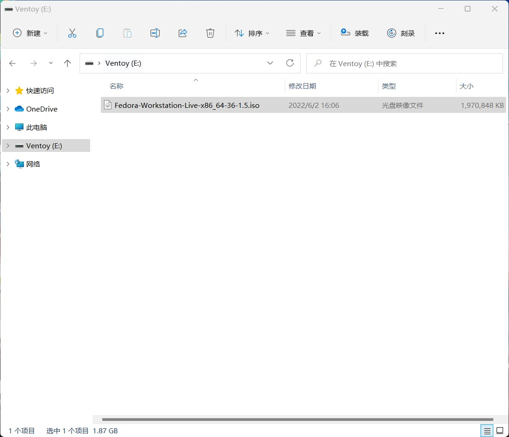
从 Ventoy 下载页面 下载 Ventoy 软件包。 解压后，执行其中的
Ventoy2Disk.exe程序，程序启动后界面如图 1 所示。 Ventoy 程序自动找到了用于制作启动盘的 32 GB U 盘点击“安装”会将 Ventoy 安装到 U 盘中，此时 U 盘会被格式化。请务必确保选中的是 目标 U 盘，且 U 盘中无其它重要文件
Ventoy 成功安装后，会弹出成功安装的对话框，点击确定
Ventoy 界面显示，安装包内 Ventoy 版本和设备内部 Ventoy 版本相同，表明 USB 启动盘制作成功
退出 Ventoy2Disk 程序。在“我的电脑”中找到名为 Ventoy 的 U 盘，并将已下载好的 Linux ISO 镜像文件复制到 U 盘中即可
进入 Live 系统#
将制作好的 USB 启动盘插入要安装 Ubuntu 系统的计算机上，开机启动， 按下 F10 或 F12 进入 BIOS，并使计算机优先从 USB 盘启动。 正确启动后，则会进入系统启动引导程序，按向上向下键选中“Ubuntu”以进入 Ubuntu 的 Live 系统。
Note
Live 系统是指安装在 USB 启动盘中的操作系统。用户可以在 Live 系统中进行 任何操作以体验该系统。
Tip
不同型号的电脑进入 BIOS 的方法可能不同，请自行查询。
若计算机无法从 USB 盘启动，则可能是由于计算机的“安全启动”设置导致的， 可以尝试进入 BIOS 设置，并在 BIOS 设置内关闭“安全启动”。
如果尝试多次都无法正确从 USB 启动，则可能是 USB 启动盘制作失败，请尝试重新制作启动盘。
开始安装#
Warning
以下安装步骤假定用户想要将 Ubuntu 系统作为电脑的唯一系统， 电脑中原有的 Windows 或其它 Linux 系统会被彻底覆盖。 如果用户想要安装双系统（即同时安装 Windows + Linux），请参考网络上的 其他文档。
读者可参考下面的图解步骤和对应的说明安装操作系统。
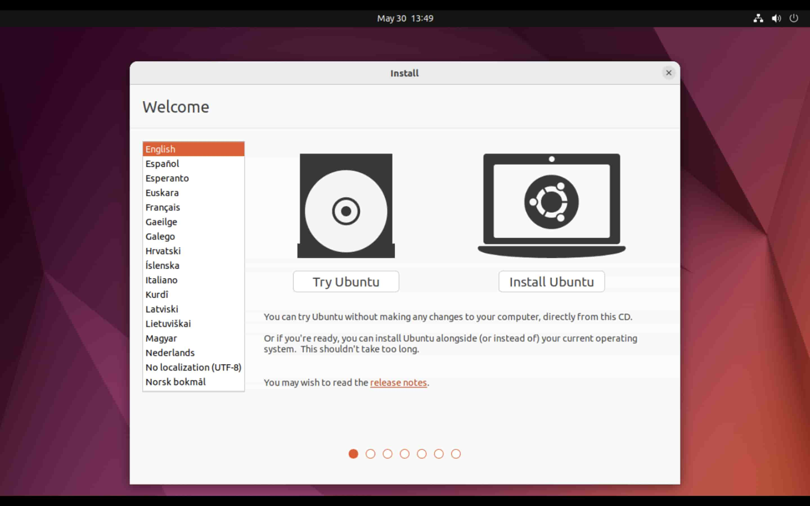
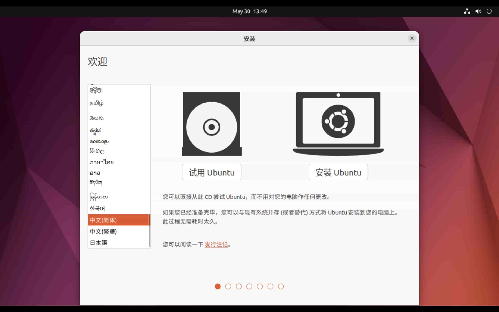
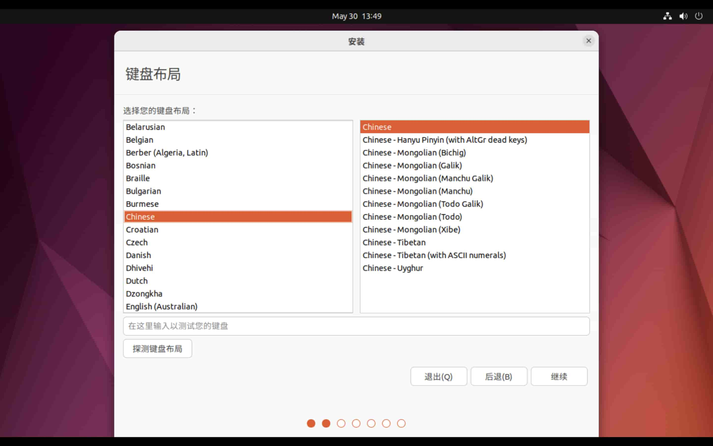
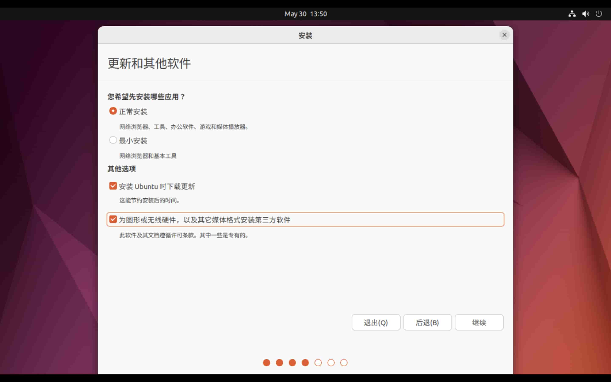
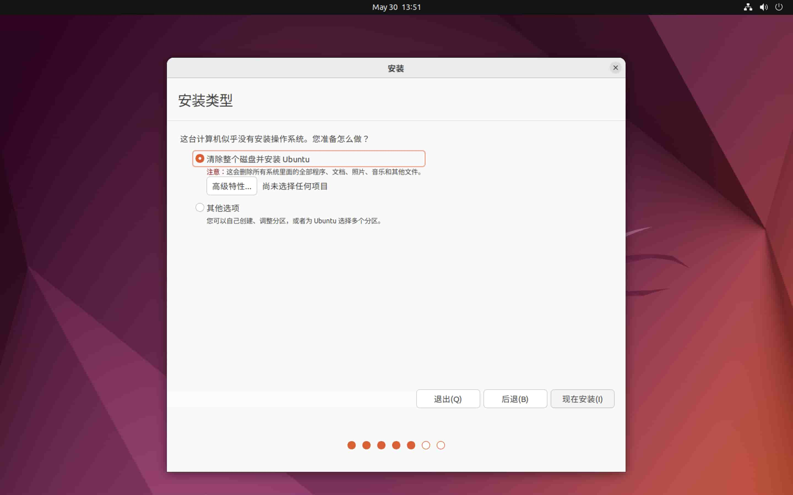
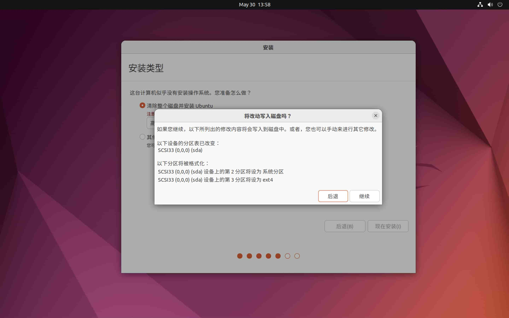
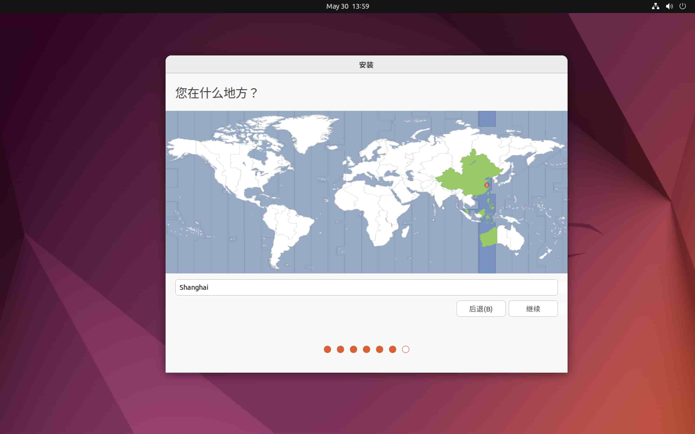
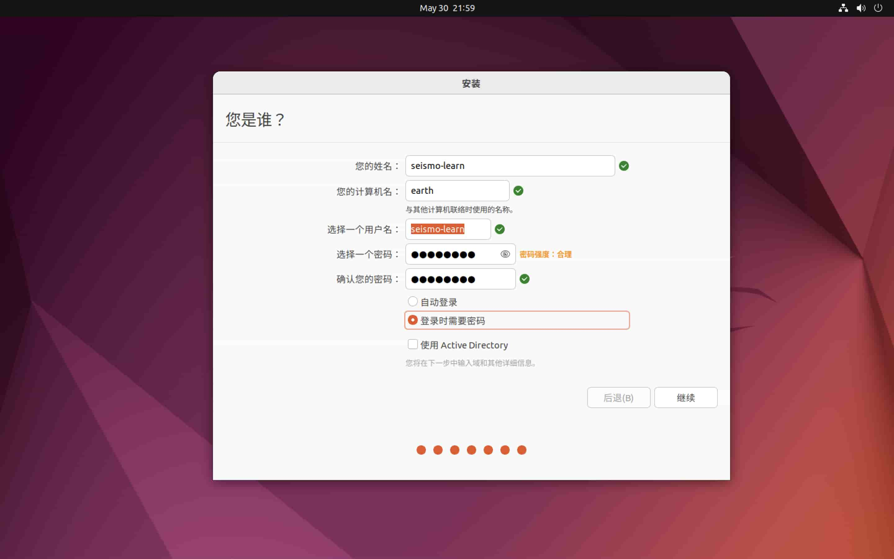
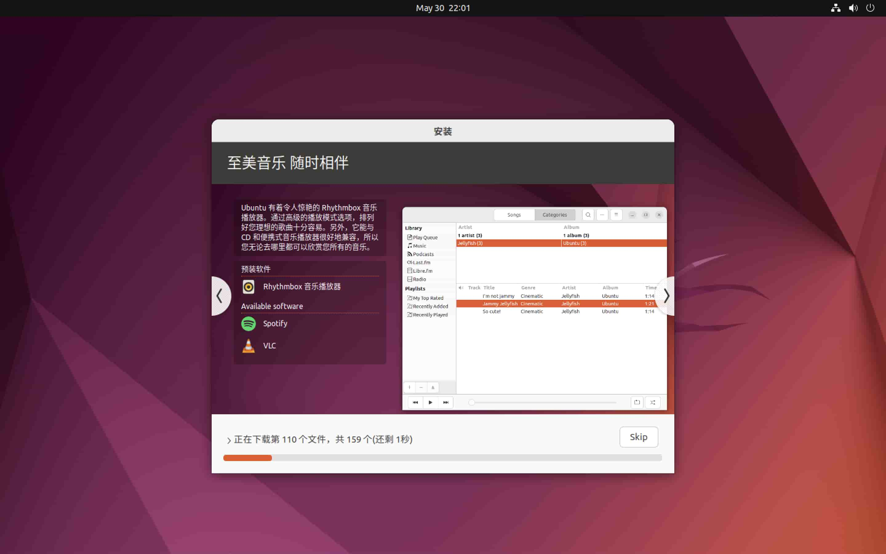
进入欢迎界面，左侧可以选择安装过程中使用的语言
选择“中文（简体）”，点击“安装 Ubuntu”即开始安装
选择键盘布局，汉语或 “English(US)”均可
选择“正常安装”，建议勾选“安装 Ubuntu 时下载更新”和“为图形或无线硬件， 以及其他媒体格式安装第三方软件”
在“安装类型”界面，选择“清除整个硬盘并安装 Ubuntu”，安装程序会进行自动分区。 有经验的用户也可以选择“其他选项”自定义分区，但需要了解 Linux 的分区操作。 对于一般用户而言，建议使用默认的自动分区
单击“现在安装”，选择“继续”以将改动写入磁盘
选择时区（例如“上海”）
输入账户信息和密码信息。注意用户名只能是英文
等待安装完成。完成后点击“现在重启”以重启计算机。
重启计算机时，记得拔出 USB 启动盘，以免再次进入 USB 安装镜像。
更新系统#
当已安装的软件有可用的更新，或 Ubuntu 系统可升级至新版本时， Ubuntu 会弹出提醒通知。建议用户及时更新系统及安装的软件。
Warning
更新系统前，特别是大版本更新（如 Ubuntu 20.04 更新为 Ubuntu 20.10）， 最好先进行一次备份（可以参考数据备份）。
Note
本节接下来介绍的大部分软件都通过命令行安装。在桌面或菜单栏中找到并点击 “Terminal” 图标以启动终端，然后在终端中输入命令并按下 Enter 键 即可执行相应的命令。
系统软件#
Ubuntu 系统自带了“软件中心”，可用于查找、安装、卸载和管理软件包，但一般建议使用
命令行工具 apt 安装和管理软件。
Note
apt 会从 Ubuntu 软件源下载软件包。
国内用户可以参考 https://mirrors.ustc.edu.cn/help/ubuntu.html 将默认软件源镜像
替换为中科大镜像，以加快软件下载速度。
注意：在替换软件源镜像后要执行 sudo apt update 更新本地缓存的软件包元数据。
apt 的详细用法请阅读 apt 帮助文档，
这里只介绍一些常用命令:
# 更新本地软件包元数据
$ sudo apt update
# 检查并升级所有已经安装的软件
$ sudo apt upgrade
# 搜索软件
$ apt search xxx
# 安装或升级软件
$ sudo apt install xxx
# 检查并升级某软件
$ sudo apt --only-upgrade install xxx
# 卸载软件
$ sudo apt remove xxx （保留配置文件）
$ sudo apt purge xxx （删除配置文件）
Tip
Linux 用户也可以访问 https://pkgs.org/ 网站查询软件包。 该网站支持多种 Linux 发行版和多个官方及第三方软件仓库， 且为每个软件包提供了丰富的元信息、依赖和被依赖关系、包含的文件、 安装方式以及更新历史等信息。
编程开发环境#
C/C++#
GCC 系列的 C/C++ 编译器是 Linux 下最常用的
C/C++ 编译器，其提供了 gcc 和 g++ 命令:
$ sudo apt install gcc g++
Fortran#
GNU Fortran 编译器是 Linux 下最常用的
Fortran 编译器，其提供了 gfortran 命令:
$ sudo apt install gfortran
Java#
运行 Java 程序需要安装 Java 运行环境，即 OpenJDK:
$ sudo apt install default-jdk
git#
git 是目前最流行的版本控制工具，推荐在科研过程中 使用 git 管理自己编写的代码和文件。一般情况下系统已经安装了该软件。如果没安装， 可以使用如下命令安装:
$ sudo apt install git